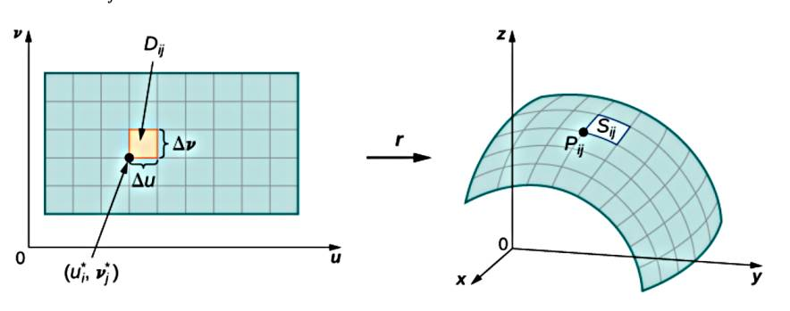
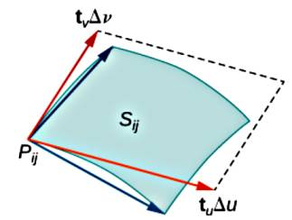
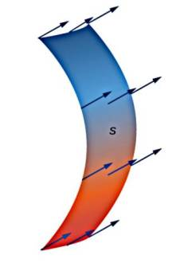
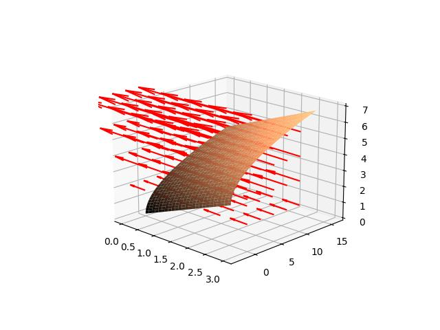

Green'in Teorisi, Uzaklaşım, Stokes, Yol ve Çizgi Entegralleri
Yüzeyler (Surfaces)
Üç boyut içindeki iki boyut yüzeyler parametrize edilerek gösterilir, tek boyutlu eğri bir parametre $t$ ile parametrize ediliyordu, alan için iki değişken $u,v$ gerekir. Notasyonel olarak $r$'nin taradığı bir yüzey
$$ r(u,v) = < x(u,v), y(u,v), z(u,v) > $$
Mesela $r(u,v) = < u, u^2, v >$ bir yüzey olabilir.
Yüzey alan hesabı için tüm yüzeyi kenarları $\Delta u$, $\Delta v$ olan hücreler yaratabiliriz. Her noktada iki tane teğet vektör bulunabilir, bunlar $t_u$ ve $t_v$ olsun,
$$
t_u = < \frac{\partial x}{\partial u},
\frac{\partial y}{\partial u},
\frac{\partial z}{\partial u} >, \quad
t_v = < \frac{\partial x}{\partial v},
\frac{\partial y}{\partial v},
\frac{\partial z}{\partial v} >
$$
Yaklaşık olarak her hücrenin alanı $\Delta S_{ij}$ her hücredeki $t_u$ ve $t_v$ (ya da yeni notasyonla onlara $t_u^{ij}$ ve $t_v^{ij}$ diyelim) yönündeki $\Delta u$ ve $\Delta v$'nin oluşturduğu paralelogram alanıdır, bu paralelogram bildiğimiz gibi iki vektörün çapraz çarpımından gelen üçüncü vektörün büyüklüğüdür, o zaman
$$ \Delta S_{ij} \approx || \Delta u t_u^{ij} \times \Delta v t_v^{ij} || $$
$$ = || t_u^{ij} \times t_v^{ij} || \Delta u \Delta v $$


Tüm ufak hücre alanlarını toplarız, ve hücre sayısı sonsuza yaklaşırken toplam alan limitine bakabiliriz,
$$ \lim_{m,n \to \infty} \sum_{i=1}^{m} \sum_{j=1}^{n} || t_u^{ij} \times t_v^{ij} || \Delta u \Delta v $$
Bu limit yüzey alan çift entegral hesabına yaklaşır / onu tanımlar, [2, sf. 769],
$$ = \iint_D || t_u \times t_v || \mathrm{d} u \mathrm{d} v = \iint_D || t_u \times t_v || \mathrm{d} A $$
Yüzey Entegrali (Surface Integral)
Yukarıda gördüklerimiz parametrize edilmiş yüzeyin alanını hesaplamak içindir. Yüzey entegrali bir yüzey üzerinden alınan entegrallere verilen isimdir, mesela tek sayı / skalar değerli bir fonksiyon $f$'nin pürüzsüz bir yüzey $S$ üzerinden alınan yüzey entegrali, o fonksiyonun her noktadaki alan büyüklüğü ile çarpılıp sonuçların toplanmasıdır, cebirsel olarak yine $t_u,t_v$ kavramlarını kullanırsak,
$$ \iint_S f(x,y,z) \mathrm{d} S = \lim_{m,n \to \infty} \sum_{i=1}^{m} \sum_{j=1}^{n} f(P_{ij}) || t_u^{ij} \times t_v^{ij} || \Delta u \Delta v $$
$$ = \lim_{m,n \to \infty} \sum_{i=1}^{m} \sum_{j=1}^{n} f(P_{ij}) \Delta S_{ij} $$
O zaman yuzey entegralleri alttaki sekilde hesaplanabilir,
$$ \iint_S f(x,y,z) \mathrm{d} S = \iint_D f(r(u,v)) || t_u \times t_v || \mathrm{d} A $$
Çizgi entegrali (line integrals) daha düşük boyuttaki benzer bir kavram idi.
Vektör Alanı İçinde Yüzey Entegrali

from mpl_toolkits.mplot3d import Axes3D
from matplotlib import cm
import numpy as np
fig = plt.figure()
ax = fig.add_subplot(111, projection='3d')
u = np.linspace(0, 3, 100)
v = np.linspace(0, 4, 100)
u,v = np.meshgrid(u,v)
x = u; y = v**2 - u; z = u + v
ax.plot_surface(x, y, z, rstride=4, cstride=4, cmap = cm.copper)
x = np.linspace(0, 3, 5)
y = np.linspace(0, 10, 5)
z = np.linspace(0, 6, 5)
fu = -y; fv = x; fw = z*0
xx,yy,zz = np.meshgrid(x,y,z)
ax.quiver(xx, yy, zz, fu, fv, fw, length=0.2, color = 'red')
ax.view_init(elev=18, azim=-46)
plt.savefig('calc_multi_75_app_03.jpg',quality=30)

[devam edecek]
Kaynaklar
[1] Marsden, Vector Calculus
[2] Strang, Calculus Volume 3, OpenStaxa
Yukarı